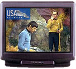
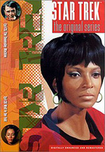
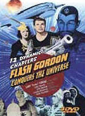

|
A
Ausência da Série Clássica na TV
 há
algum tempo, o canal a cabo USA retirou da grade de sua programação
a Série Clássica de Jornada nas Estrelas. Isso
provocou certa revolta por parte de muitos fãs, pois o USA
era o úúnico canal brasileiro que estava exibindo as aventuras
clássicas. há
algum tempo, o canal a cabo USA retirou da grade de sua programação
a Série Clássica de Jornada nas Estrelas. Isso
provocou certa revolta por parte de muitos fãs, pois o USA
era o úúnico canal brasileiro que estava exibindo as aventuras
clássicas.
A justificativa foi que a série estava sendo exibida há muito
tempo, com muitas reprises e, conseqüentemente, a audêncía
só diminuia. Em face disso, quero aqui fazer algumas
extrapolacões, não sentido de que se a retirada da série foi
um prejuízo para os fãs ou um benefício a longo prazo.
Isso
nos remete ao ano de 1991, quando a Série Clássica,
após longa ausência na televisão brasileira, voltou
a ser exibida em cópias novas, com nova dublagem, pela TV
Manchete. Nessa época. a volta da Série foi uma verdadeira
alegria entre os fãs, que estavam sofrendo de uma certa "abstinência"
e havia apenas onze episódios disponveis em VHS, um deles
o piloto inédito "The Cage".
A Série Clássica, antes da exibição pela Manchete,
foi televisionada pela Bandeirantes, não começo da década de
80. Apenas os fãs mais afortunados tiveram a oportunidade
de gravar alguns episódios em VHS, formato que ainda estava
engatinhando no Brasil. Hoje essas gravações so verdadeiras
relíquias por apresentarem a dublagem
original, muito superior nova feita em 1991pela
empresa VTI.
A Manchete comprou apenas os dois primeiros anos da Série,
pretendendo comprar o terceiro, e último, após a verificao
de boa audiência. Como esperado, a Série obteve bons índices,
mesmo com o péssimo horário das segundas, quartas e sextas-feiras,
s 18h00, dentro da chamada "Sessão Espacial".
A boa audiência foi conquistada pelo fato de que não apenas
os trekkers estavam assistindo Série, mas também os fãs
casuais e os apreciadores de Séries dos anos 60.
Mas, infelizmente, por problemas financeiros, a Manchete estava
com sérias dificuldades, tanto que encerrou suas atividades
anos depois. E essas dificuldades a fizeram reprisar várias
vezes os dois primeiros anos da Série Clássica,
sem nunca ter adquirido o terceiro, e último.
De novo os fãs estavam sem a Série na televisão, porm
o vídeo-cassete já era um formato bem mais difundido e muitos
puderam gravar os episódios em fita. A carência já não era
to amarga como o fora entre meados nos anos 80 e início dos
anos 90.
 E,
em meados dos anos 90, a Record comprou os direitos da Série
e passou a exibi-la novamente, sendo que a audiência continuava
boa, não tanto como em 1991, mas o bastante para assegurar
novas reprises durante um certo tempo. Quase que simultaneamente,
o canal a cabo USA surgiu no país e começou a exibir a Série
Clássica também. O terceiro ano foi finalmente adquirido
para exibição no país, sendo transmitido pela Bandeirantes
e pelo USA, que também exibia, enfim, as demais Séries
de Jornada nas Estrelas.
há tempos os fãs não se viam to felizes, com a televisão
nacional correndo contra o atraso de anos nas exibies da
"Nova Gerao", "Deep Space Nine" e "Voyager". Com o passar
do tempo, mais fãs foram gravando os episódios em VHS e as
reprises comearam a perder a importncia. Chegou a um momentão
em que os fãs já não tinham tempo e pacincia para acompanhar
a Série, não porque cansaram dela, longe disso, mas sim porque
realmente já não havia mais novidade.
Reprises perdem a importância?
Conseqentemente, pela baixa audiência, primeiro foi a Bandeirantes
quem parou de exibir os episódios e, após certo tempo, o USA
fez o mesmo. Muitos fãs se enraivaram, a maioria injustificadamente,
pois embora não assistissem mais a Série, queriam a permanncia
da mesma na TV custe o que custar. Mesmo, como ocorreu com
a Bandeirantes, que o programa fosse exibido pelas manhs
em um programa infantil (o infame "É o Bicho").
Agora nos encontramos de novo sem a exibição da Série na TV
e muitos cogitam se seria melhor que ela permanecesse alguns
anos ausente da nossa telinha para eventualmente voltar com
uma fora maior.
 Entretanto,
acredito que a Série Clássica jamais volte com fora
televisão da maneira como ocorreu não ano de 1991,
pois hoje não existe mais aquela "abstinência" sofrida pelos
fãs daquele tempo, já que a Série já não está totalmente
ausente como esteve antes. Nos dias atuais, a maioria dos
fãs tem episódios gravados em VHS, os DVDs importados com
a Série completa podem ser facilmente adquiridos (porm, com
preo bem elevado) e episódios so baixados pela internet
por quem tem banda larga.
A Série Clássica não está ausente; muito pelo contrrio,
nunca esteve to presente na vida dos fãs. E quanto suposio
de que uma nova gerao de telespectadores venha a descobrir
a Série futuramente ? difcil dizer ao certo.
Hoje, uma boa parte dos fãs da Série Clássica so aqueles
que comearam a acompanhar a Série a partir de 1991, pela
TV Manchete; outros, de significativo número, so aqueles
que acompanharam a Série desde a exibição pela TV Excelsior
- não final dos anos 60 - e, posteriormente, pela Bandeirantes.
Poucos so aqueles que se tornaram fãs a partir das exibies
pela Record em meados dos anos 90. Portanto, a Série Clássica
reside principalmente não mbito da nostalgia.
Quando essa gerao nos deixar, a Série Clássica ter
perdido o seu maior contingente de fãs. A partir desse momento,
a Série ter que sobreviver por sentimentos outros que não
o de nostalgia; talvez sobreviva - ou melhor, renasa - por
sentimentos de interesse por uma época. Distante - os anos
60 - que muito colaborou na cultura e comportamentão do ser
humano moderno.
fato constatado que s tem crescido entre os jovens o fascnio
pelos anos 60, seja pela msica, pelo pensamento, pelas liberdades
adquiridas etc. Por que não se cogitar pelo nascimentão de
fascnio por Séries de TV desse perodo? Mas que tipo de fascnio
uma Série como Jornada nas Estrelas pode trazer para
uma futura gerao? A noo de que se tratava de uma Série
frente de seu prprio tempo? Talvez no. A noo da importncia
da Série não contexto do rompimentão do preconceito entre os
homens e da esperana por um futuro melhor? Infelizmente,
esses temas, embora novos nos anos 60, hoje já não representam
novidade, mesmo porque a luta pela igualdade j está mais
do que enraizada na populao formadora de opinio - cujos
trekkers fazem parte.
 Que
tal então supor que a Série ser vista to somente pelo divertimentão
que oferece, seja pelos roteiros interessantes que oferecem
bom humor ou uma certa dose de absurdo saudável, ou
pela qumica dos personagens, pelos cenrios falsos etc? Podemos
exemplificar, mas de maneira rude, atravs de um fato anlogo:
nossa gerao não habitava esse planeta quando da exibição
de Séries dos anos 30, como "Flashá Gordon" ou "Buck Rogers",
ou até mesmo dos grandes clssicos de horror da Universal
do mesmo perodo, como "O Homem Invisvel" e "Frankenstein".
Entretanto, essas Séries e filmes encontraram numerosos fãs
em geraes futuras exatamente pelo fascnio despertado.
So filmes divertidssimos, produzidos com paixo e competncia
(dentro dos limitados oramentos), exatamente como a série
original de Jornada nas Estrelas.
Luiz
Felipe do Vale Tavares
é fã de cinema, DVDs e, claro, de Jornada
nas Estrelas.
|